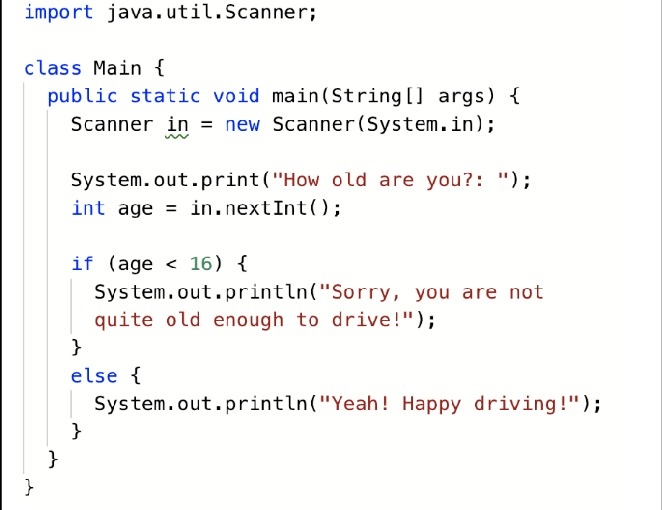

Introduction
Java is a powerful and versatile programming language that has become a cornerstone in the world of software development. It was created by James Gosling and Mike Sheridan at Sun Microsystems and was released in 1995. Since then, Java has gained immense popularity due to its platform independence, robustness, and wide range of applications..
Key Concepts
Object-Oriented Programming (OOP):
Java is a pure object-oriented programming language. It revolves around the concept of "objects", which are instances of classes. Classes define the properties (attributes) and behaviors (methods) of objects. OOP promotes code reusability, modularity, and maintainability.
Platform Independence:
Java achieves platform independence through the use of the Java Virtual Machine (JVM). Java source code is compiled into bytecode, which can be executed on any platform with a compatible JVM installed. This "write once, run anywhere" capability is a hallmark of Java.
JVM (Java Virtual Machine):
The JVM is an integral part of the Java Runtime Environment (JRE) and is responsible for executing Java bytecode. It provides an environment that abstracts away the underlying hardware and operating system, allowing Java applications to run consistently across different platforms.
Memory Management:
Java handles memory allocation and deallocation automatically through a process called garbage collection. This relieves the programmer from managing memory manually, reducing the likelihood of memory leaks and dangling references.
Garbage Collection:
Garbage collection is the process of automatically identifying and reclaiming memory that is no longer in use by the program. This helps prevent memory leaks and ensures efficient memory utilization.
Exception Handling:
Java provides a robust mechanism for handling exceptions and errors. This allows the program to gracefully recover from unexpected situations, enhancing the reliability of Java applications.
Multi-threading:
Java supports multi-threading, allowing a program to execute multiple tasks concurrently. This is especially important for applications that need to perform multiple operations simultaneously, such as graphical user interfaces or server applications.
Inheritance:
Inheritance is a fundamental concept in OOP that allows a class (subclass) to inherit the properties and behaviors of another class (superclass). This promotes code reuse and allows for the creation of hierarchies in class relationships.
Interfaces and Abstract Classes:
Interfaces define a contract for a set of methods that a class must implement. Abstract classes provide a blueprint for classes to be derived from, but cannot be instantiated themselves. Both concepts are essential for achieving abstraction and polymorphism.
Polymorphism:
Polymorphism allows objects to be treated as instances of their superclass, even if they are actually instances of a subclass. This enables flexibility in code design and promotes code reusability and flexibility.
Encapsulation:
Encapsulation involves bundling data (attributes) and methods (functions) that operate on the data into a single unit, known as a class. This restricts access to certain components, providing a level of data protection and preventing unauthorized manipulation.
Abstraction:
Abstraction involves creating a simplified representation of an object or system, focusing only on the relevant details. In Java, this is often achieved through abstract classes, interfaces, and methods.
Packages:
Packages are used to organize classes and interfaces into namespaces. They help in avoiding naming conflicts and provide a way to structure large applications..
Examples

Further Reading
For deeper exploration, we've compiled a list of recommended books, articles, websites, and other resources that can help you expand your knowledge in this area.
Books:
- "Effective Java" by Joshua Bloch
- "Java Concurrency in Practice" by Brian Goetz et al.
- "Head First Design Patterns" by Eric Freeman et al.
Online Resources:
- Oracle's Java Tutorials (https://docs.oracle.com/javase/tutorial/)
- Baeldung (https://www.baeldung.com/)
- Vogella (https://www.vogella.com/tutorials/java.html)
Video Tutorials:
- Udemy (https://www.udemy.com/)
- Pluralsight (https://www.pluralsight.com/)
Practice and Challenges:
- LeetCode (https://leetcode.com/)
- HackerRank (https://www.hackerrank.com/domains/tutorials/10-days-of-java)